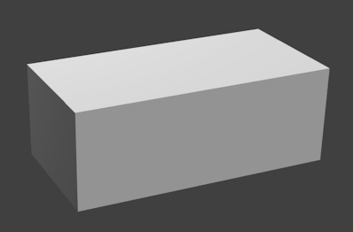

CONSTRUCTION
Construction: there are four key aspects for a practical design:
- Modularity
- Loose coupling
- 'Weather' resistance
- 'Fouling' resistance
Taking these in order:

- Modularity: the island needs to be a highly modular structure, easily assembled from simple components made from strong and durable materials. Perhaps the simplest practicable design is to have just two buoyancy units (plus modules for area cover/residential domes/greenhouses etc., which sit on top of the buoyancy units while not necessarily buoyant themselves), one shaped like a shoe-box, the SPAR, and the other like a wedge of cheese,
CORNER
, to connect two SPARs together, at an angle of, say, sixty degrees, or three or four SPARs together with two CORNERS attached back-to-back. From this you can construct, e.g. triangular and hexagonal rings of SPARs, or almost any other shape.
- Loose coupling: modules need to be strongly yet loosely coupled to absorb wave energy (including storm waves!) without incurring long-lasting damage (i.e. no more than readily repaired wear and tear). By attaching hawsers to the sides of SPARs and CORNERs, and building walkways with flexible joins (e.g. rope/net walks), the shape of structures can be strongly held while still allowing individual units to move and absorb wave energy; this would be enhanced with inertial damping provided by the water anchors attached to every buoyancy unit. Provision of unit-to-unit energy absorption could be as simple as tyre nets.
- 'Weather' resistance: for people to live comfortably on a floating island it will be necessary to ameliorate the effects of constant wave and wind action, including reducing the impact of storms and heavy swells (this last is also needed for harboured boats and the islands own structures!); so all permanent structures need to be intrinsically wind and storm resistant, which indicates the use of curved rather than flat and smooth rather than rough surfaces, the ideal structure in that case being a smooth sphere, and the most practical version of that being a smooth-skinned geodesic dome or dome cap. Similarly the ideal shape for the whole island would be circular, but a simpler and more practical shape would be a hexagon or other regular polygon, with an outer protective ring as in the design proposed below.
- 'Fouling' resistance: modules need to be functionally impervious to the build-up of marine organisms, i.e. fouling, which is to be encouraged rather than removed, to improve marine productivity; attachment points which need to be kept clean or equipment which can be damaged or made inoperative by fouling needs to be elevated above the average daily level of the waves; generally, most expected uses of these structures won't be affected adversely by the build-up of marine organisms, which will improve the stability of structures by increasing their weight and hence inertia, as well as increasing marine productivity in their vicinity. Having said that, it is inevitable that some cleaning, i.e. removal of marine encrustation, will be needed!
An Initial Island Design